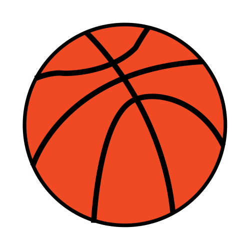
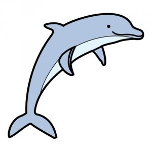
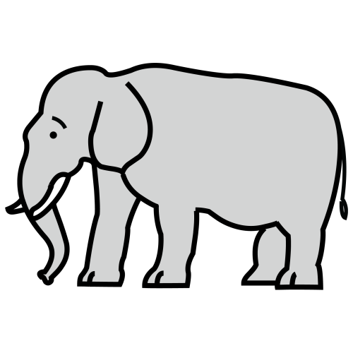

Enlaces a la letra del alfabeto:
Términos con A
Términos con B
Términos con C
Términos con D
Términos con E
ABANICO
- Objeto que sirve para dar aire.
- Conjunto de cosas de la misma clase que tienen alguna diferencia y entre las que se puede elegir
BALÓN
- Pelota grande llena de aire que sirve para jugar y practicar deportes.

CABALLO
- Animal mamífero macho de tamaño mediano o grande. Tiene la cabeza alargada y las orejas pequeñas. Las uñas se llaman cascos. Tiene cola y pelo largo en el cuello. Se domestica con facilidad. La hembra del caballo es la yegua.

DELFÍN
- Animal que vive en el mar. Tiene una cabeza en forma de pico y un agujero en la cabeza para respirar. Pertenece a la familia de los mamíferos.

ELEFANTE
- Mamífero de gran tamaño que tiene los ojos pequeños. Su piel es gruesa y de color gris. Tiene las orejas muy grandes, trompa y 2 colmillos de marfil. Viven en manadas en Asia y África.

Subir
Enlaces de interés:
wikipedia